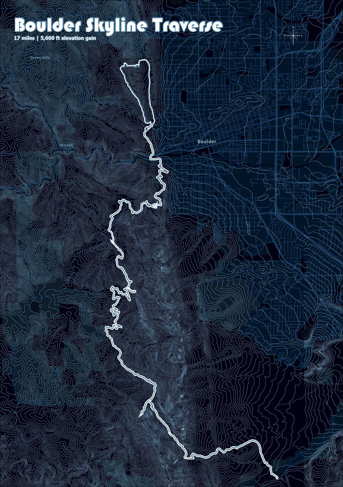
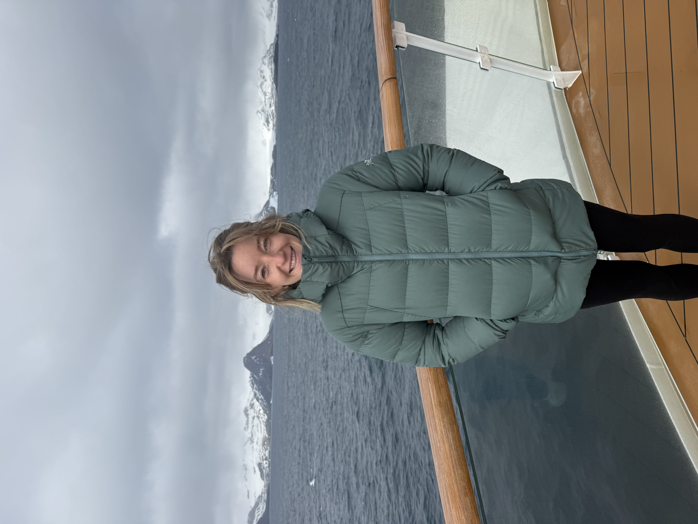

Geothermal • GIS • Suitability Analysis
Geothermal Suitability Mapping
Spatial modeling and geospatial analysis for understanding geothermal potential, uncertainty, and development context.
ArcGIS Pro • Python • Raster Analysis
GIS • Cartography • Spatial Analysis • Data Visualization
I create cartography, spatial analysis, and data-driven visual storytelling for environmental, energy, water, and land-focused projects.
Featured Focus
From geothermal and groundwater mapping to environmental GIS analysis and technical data visualization, I build work that is both rigorous and usable.
Tools & workflows
Selected Work
A sample of projects across geospatial analysis, environmental data, mapping, and scientific communication.
Geothermal • GIS • Suitability Analysis
Spatial modeling and geospatial analysis for understanding geothermal potential, uncertainty, and development context.
ArcGIS Pro • Python • Raster Analysis

Hydrology • Mapping • Field Support
GIS workflows and map products for groundwater elevation, surface interpretation, and decision support.
ArcGIS Pro • CSV/Spatial Data • Cartography

Data Visualization • Storytelling
Visual communication of technical datasets through clean graphics, maps, and spatial narratives built for clarity and impact.
Python • GIS • Visual Design

Cartography • Art • Illustration
An artistic trail map of the Boulder Skyline Traverse in Boulder, CO.
Illustrator • ArcGIS Pro • Design

Cartography • Art • Illustration
An artistic trail map of one teams adventure race World Championship path to the finish line.
Illustrator • ArcGIS Pro • Design

Cartography • Art • Illustration
An artistic trail map.
Illustrator • ArcGIS Pro • Design
What I Do
Polished static and digital maps designed for reports, presentations, field use, and portfolio-quality communication.
Spatial problem solving for environmental, hydrologic, land-use, and energy-related questions.
Data processing, automation, and reproducible workflows for geospatial and scientific datasets.
Clear, compelling visuals that make technical information easier to understand and act on.
Experience across geothermal, groundwater, and broader environmental and earth science topics.
Translating complex analysis into visuals and narratives that work for both technical and non-technical audiences.

About
I’m a geospatial professional with a background in geology, GIS, and data science. My work sits at the intersection of spatial analysis, cartographic design, and technical communication.
I’m especially interested in projects involving energy, water, environment, and land systems—where strong analysis and strong visuals both matter.